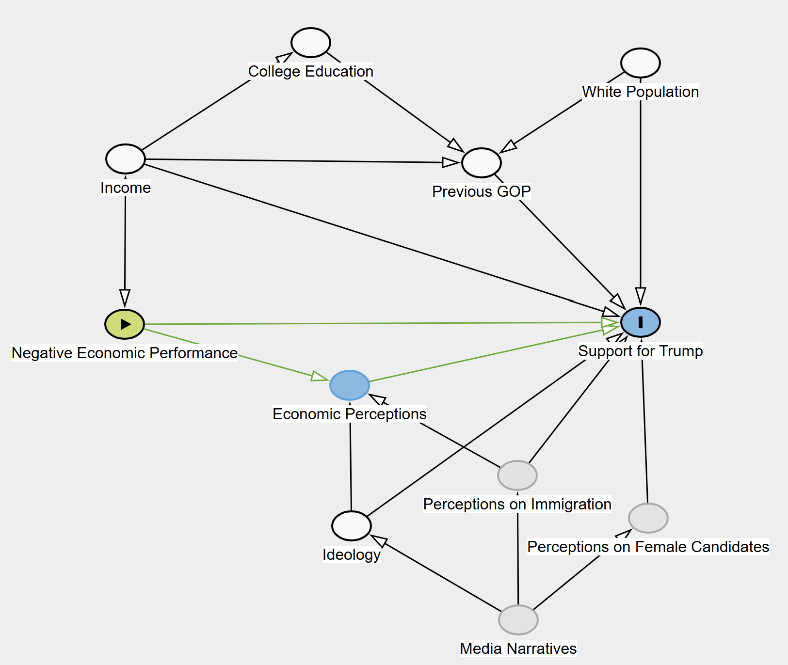
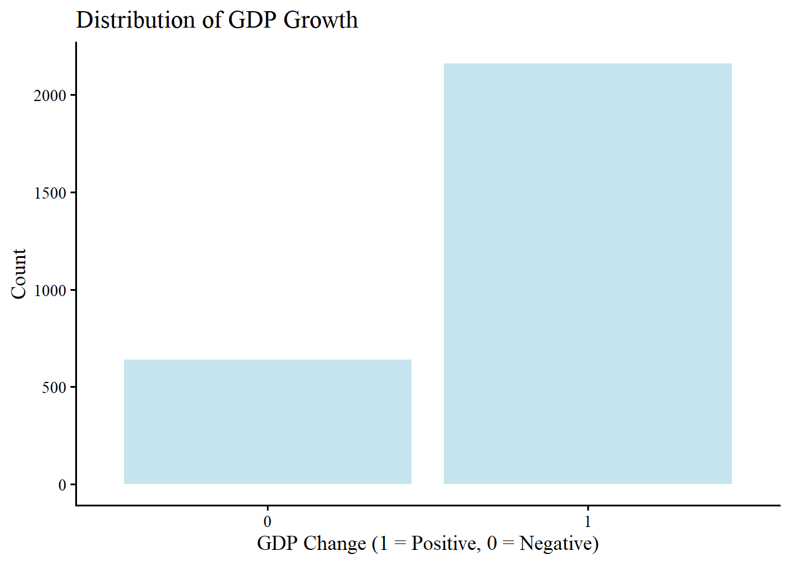
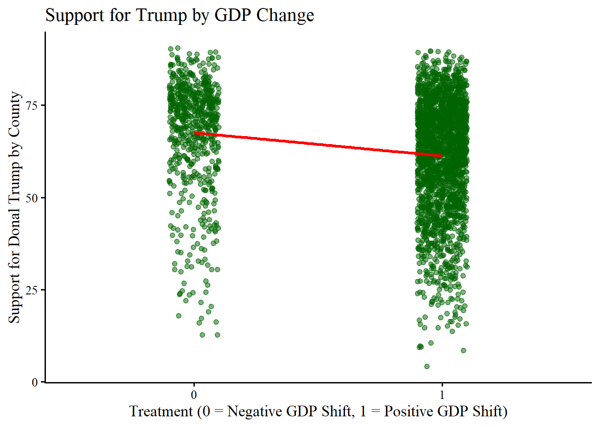
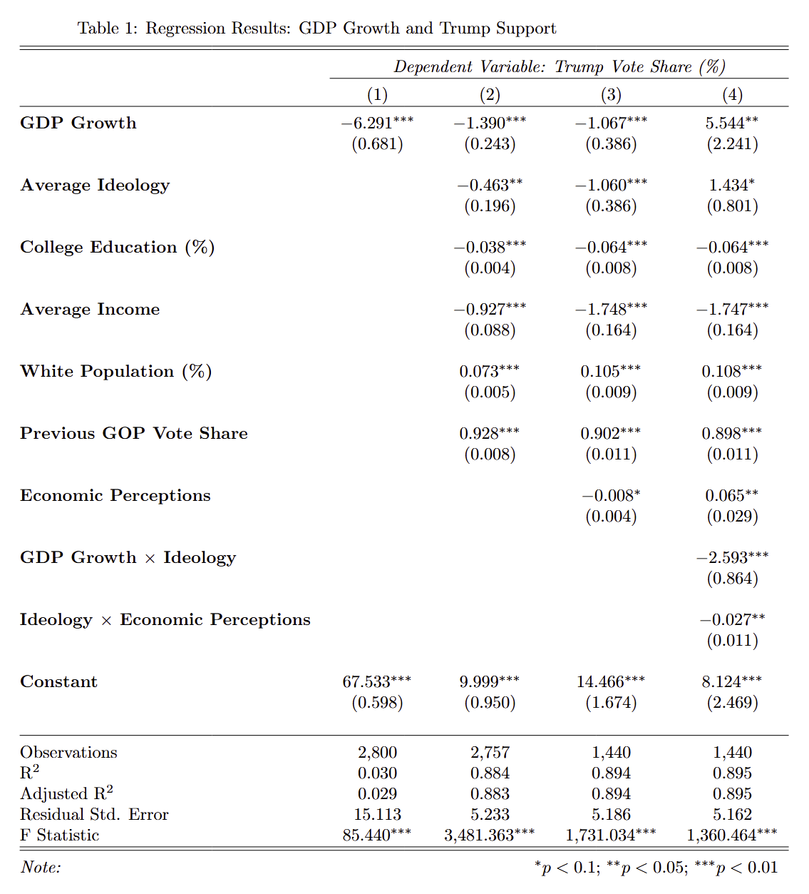
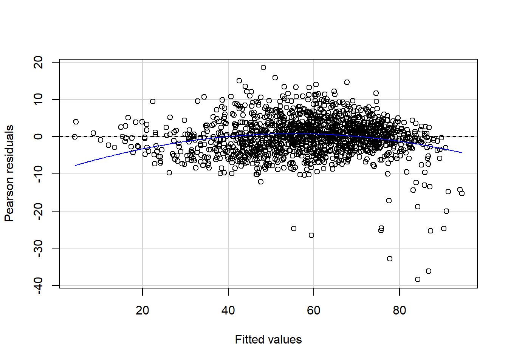
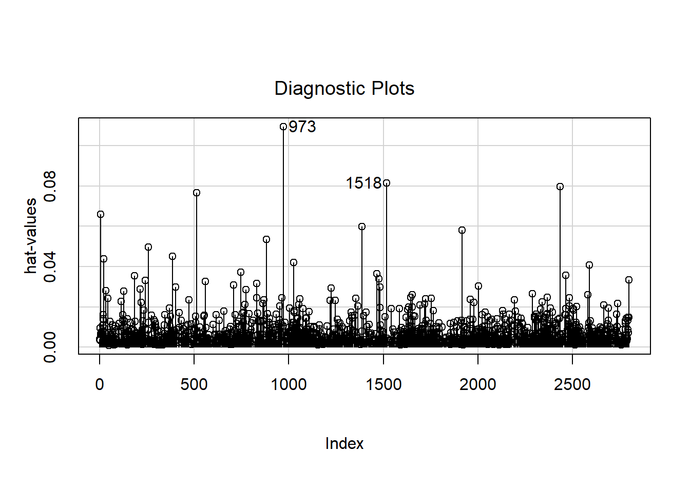
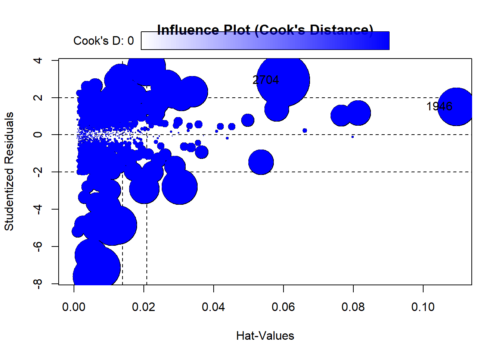
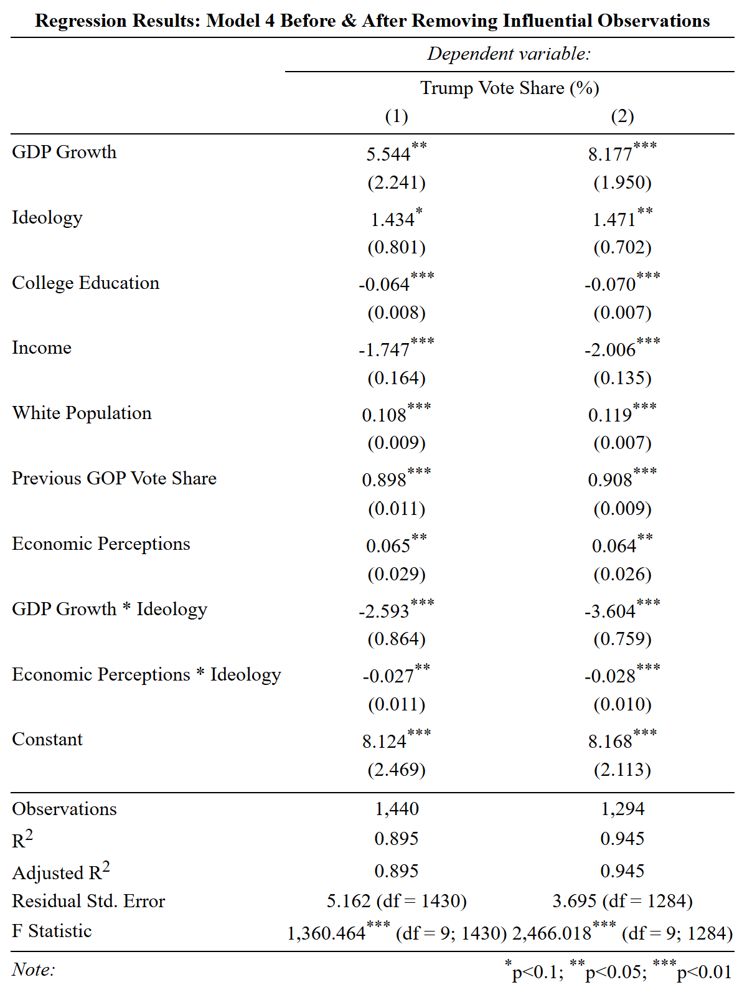
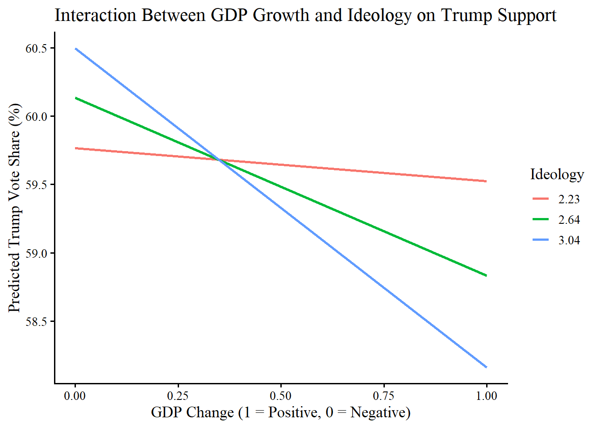
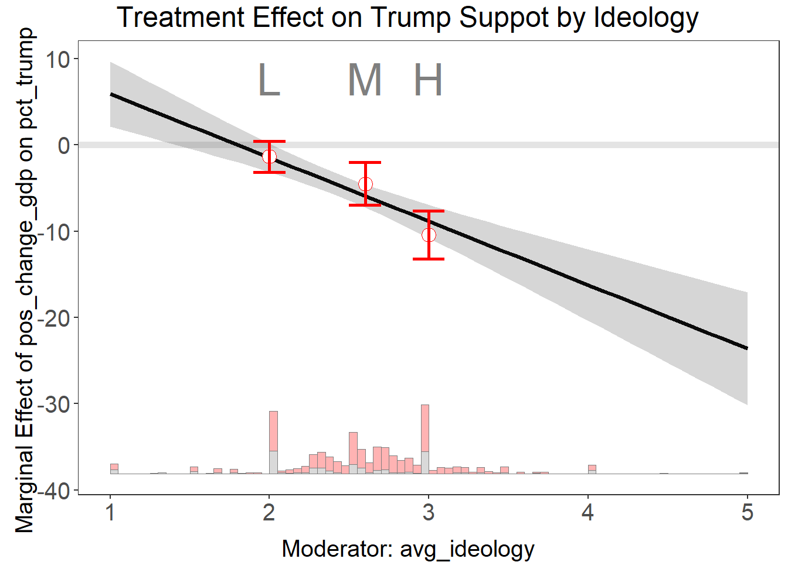

Economic Conditions and Populist Support: County-Level Evidence from the 2016 U.S. Presidential Election
Introduction
Causal Research Question (Class Requirement)
How did local economic conditions causally affect Donald Trump’s county-level support in the 2016 U.S. presidential election?
Research Question
How did local economic conditions causally affect Donald Trump’s county-level support in the 2016 U.S. presidential election?
Importance of the Research Question
Donald Trump’s presidency has been marked by significant political and institutional change, accompanied by a reconfiguration of traditional party coalitions. From his first term onward, Trump’s populist appeal thrived on voter concerns about immigration, economic uncertainty, and dissatisfaction with the political establishment. His electoral victories in 2016 and 2024 were not only driven by partisan loyalty but also by widespread economic and social grievances directed toward the structure of existing institutions (Lieberman et al., 2017). Through his populist and anti-establishment rhetoric, Trump was able to mobilize a broad coalition of voters who felt left behind by the economic status quo and were willing to sacrifice democratic norms for large-scale change. Scholars such as Levitsky and Ziblatt (2018) have claimed these actions to be a form of democratic erosion, arguing that democratic erosion often begins when elected leaders subvert institutions from within, a pattern they suggest Trump followed by undermining independent media, questioning election legitimacy, and attacking democratic checks and balances.
A large part of Trumps populist appeal has centered around the standard of living and economic conditions of the average American, with Trump promising to bring back manufacturing jobs, renegotiate trade deals, and challenge political elites through a strong economy. Leading up to the 2024 election, concerns over inflation, job markets, and income inequality dominated voter priorities, with a Gallup survey finding that 52% of voters ranked the economy as their top concern, even above democratic stability (Brenan, 2024).
The global rise of populist leaders in response to economic shocks, including inflation, supply chain disruptions, and immigration pressures, suggests a broader global pattern: during economic instability, voters may turn toward anti-establishment candidates in the hopes of pursuing change at any cost (Vision of Humanity, 2024).
Despite concerns around a challanging of the norms and democratic stability, Trump’s support has remained strong, raising the question:
Do economic hardships cause voters to support candidates who challenge the political status quo, even at the expense of democratic norms?
This study examines whether a economic grievance dynamic was at play in Trump’s first election in 2016, when the U.S. was emerging from the Great Recession and experiencing a high level of economic growth. By analyzing county-level economic performance and Trump’s vote share I explore the association between economic conditions, rather than objective economic stability and macro-level assessment, and mobilized support for Trump.
Research Design
To examine the association between economic conditions and support for Donald Trump, I analyze county-level economic, electoral, and survey data leading up to the 2016 election. I define local economic conditions as changes in county-level GDP between the 2012 and 2016 elections and estimate their effect on Trump’s county-level vote share.
To address confounding, I control for key socioeconomic factors, including, college education levels, average ideological identification, racial demographics, average income levels, prior GOP support (represented as Mitt Romney 2012 vote share). Additionally, I examine whether economic perceptions mediate the relationship between actual economic conditions and voting behavior, as well as if ideology moderates this effect.
Key Findings
The results indicate that economic improvement negatively affected Trump’s vote share, with counties experiencing GDP growth being less likely to support Trump, suggesting that economic conditions played a key role in mobilizing his voter base. That said, personal economic perceptions did not mediate this relationship, with voters’ assessments of the economy not being strongly influenced by objective economic conditions. Instead, ideological preferences significantly shaped economic perceptions, with ideology moderating both economic perceptions and their limited effect on Trump support.
These findings suggest that economic reality influenced voter behavior, affecting Trump’s vote share through ideological perceptions rather than direct economic perceptions. Overall, this study finds that economic conditions and ideological signaling outweigh democratic concerns in voter decision-making, even during periods of relative political stability.
Causal Pathways & Theoretical Motivation
A key to economic voting theory is the idea that voters reward or punish incumbents based on economic performance. A basic understanding is voters reward incumbents for economic good times, punishing it for bad. Conversely, when the economy improves, voters may be less inclined to seek drastic political change and instead opt for continuity (Lewis-Beck & Nadeau, 2010).
Trump’s 2016 presidential campaign heavily emphasized economic grievances, particularly in regions experiencing economic shocks from globalization such as industrial decline, job loss, and wage stagnation (Colvin, 2016). His populist rhetoric was positioned and positioned as a political outsider as an anti-establishment alternative, promising to restore lost manufacturing jobs, renegotiate trade deals, and challenge political elites. From this signaling and the notion that economic distress fuels populist support, we would expect counties with weaker economic performance to have a stronger shift toward Trump in 2016.
While many counties followed this pattern, economic voting is often filtered through ideological and partisan biases. Perceptions of the economy may not always align with actual economic conditions, as voters tend to interpret economic performance through their existing ideological lens. As an example:
Republican-leaning voters may be more likely to perceive the economy as performing poorly under a Democratic administration (Obama, 2008–2016), regardless of objective economic indicators.
Democratic-leaning voters may be less likely to attribute economic difficulties to systemic issues and globalization, instead focusing on social or policy-based explanations.
This partisan filtering suggests that ideology moderates both economic perceptions and voting behavior. As a result, in this study, I consider whether economic perceptions mediate the relationship between actual economic conditions and Trump support, and whether ideology moderates the effect of both economic conditions and economic perceptions.
Data-Generating Process (DGP)
The mechanism linking economic conditions to Trump support can be conceptualized as follows:
Economic Performance (\(X\)) changes between 2012 and 2016 at the county level as the main explanatory variable.
Voters in these counties form perceptions of the economy (\(M\)) as a potential mediator, which may or may not align with actual economic conditions.
Ideology (\(Z\)) as a moderator on both:
- How voters interpret economic conditions
- How economic perceptions influence Trump support
Support for Trump (\(Y\)) as the outcome, which is ultimately shaped by both objective economic performance and voters’ ideological filters.
Key controls to block confounding paths:
College Graduation Rates: Education is correlated with both economic performance and voting behavior.
Income levels: Economic performance is directly tied to income levels, which can influence voting.
Racial demographics: Racial composition has been shown to influence Trump support, making it an important control.
Prior GOP support, 2012 election: Controlling for past Republican vote share accounts for historical partisanship.
Mathematically, the relationship between the Explanatory and Outcome can be represented as:
\[ Y = \beta_0 + \beta_1 X + \beta_2 M + \beta_3 Z + \beta_4 (X \times Z) + \beta_5 (M \times Z) + \epsilon \]
Where:
\(X\) = Economic conditions (GDP growth) \(M\) = Economic perception \(Z\) = Ideology \(Y\) = Trump vote share
Based on this framework, I test the following hypotheses:
Null Hypothesis \[ H_0: \text{Economic conditions had no significant effect on Trump’s county-level vote share in 2016.} \]
Economic Conditions Hypothesis (Alternative Hypothesis) \[ H_1: \text{Counties with stronger economic growth between 2012 and 2016 were less likely to support Trump in 2016.} \] Economic growth reduces the likelihood of anti-establishment voting, while economic hardship fosters resentment toward the status quo.
Economic Perception Mediation Hypothesis \[ H_2: \text{The effect of economic conditions on Trump support is mediated by voters' economic perceptions.} \] If voters’ assessments of the economy reflect actual conditions, this pathway would be expected. Through this hypothesis, economic conditions would effect voters perceptions of the economy which would shift their support for Trump.
Ideological Moderation Hypothesis \[ \begin{aligned} H_3: &\text{ Ideology moderates both the relationship between economic conditions} \\ &\text{ and perceptions, and between perceptions and Trump support.} \end{aligned} \] Partisan bias affects how voters interpret economic information, leading Republican-identifying voters to perceive the economy as worse under a Democratic incumbent, which may increase their likelihood of voting for Trump. Additionally, Ideological acts as a placeholder for other political signaling from media and Trumps framing of social issues (such as immigration and control by political elites).
Sample
Unit of Analysis
The unit of analysis for this study is the county-level Federal Information Processing Standards (FIPS) code, which uniquely identifies each county in the United States.
Data Sources, Coverage, and Aggregation
To examine the relationship between economic conditions and Trump’s electoral performance, I integrated multiple datasets covering electoral outcomes, economic performance, public opinion, and demographic characteristics. County-level election data for the 2012 and 2016 presidential elections comes from the MIT Election Lab U.S. Election Data, which provide vote shares for each candidate across 3,156 counties. Economic conditions were measured using county-level GDP data from the Bureau of Economic Analysis (BEA), capturing yearly economic performance across the same 3,156 counties. To assess economic perceptions, I utilized Gallup Survey Data, which aggregates responses from 12 separate polls conducted between November 6, 2012, and November 8, 2016. Across these four years and 12 survey waves, there were 54,121 respondents, though the number of responses varies by question. Survey responses are coded as dummy or categorical variables.
While the county-level approach provides valuable insights into how local economic conditions influenced Trump’s support, it does not directly capture individual-level voting behavior. Additionally, differences in urban and rural economies may lead to variations in how economic conditions affect political preferences. The Gallup survey data, being aggregated at the county level, reflects broad economic perceptions rather than the sentiments of individual voters. Despite these limitations, the sources allows for an initial analysis of how local economic conditions and public perceptions shaped Trump’s electoral performance in 2016.
Measurement
Key Variables and Coding
This study examines how local economic conditions (\(X\)) affect Trump’s vote share (\(Y\)), while accounting for potential mediation by economic perceptions (\(M\)) and moderation by ideology (\(Z\)).
Independent Variable (\(X\)): Economic Conditions - Measured as county-level GDP growth between 2012 and 2016. Constructed as a binary indicator:
\[ \text{Positive Change in GDP} = \begin{cases} 1, & \text{if county GDP increased from 2012 to 2016} \\ 0, & \text{if county GDP declined or remained stagnant} \end{cases} \]
Dependent Variable (\(Y\)): Trump’s Vote Share - Measured as the percentage of total votes cast for Donald Trump in each county in the 2016 election:
\[ \text{Trump Vote Share} = \frac{\text{Trump Votes}}{\text{Total Votes}} \times 100 \]
Mediator (\(M\)): Economic Perceptions - Measured as the percentage of county residents who believed the economy was improving (from Gallup survey data):
\[ \text{Economy is Improving} = \begin{cases} 1, & \text{if majority reported improving conditions} \\ 0, & \text{otherwise} \end{cases} \]
Moderator (\(Z\)): Ideology - Measured as average county-level ideology score based on survey responses. - Standardized to a five point scale from 0 (Conservative) to 5 (Liberal), with those reporting “Don’t Know” coded as Moderate.
\[ \text{Ideology} = \begin{cases} 1, & \text{Very conservative} \\ 2, & \text{Conservative} \\ 3, & \text{Moderate} \\ 4, & \text{Liberal} \\ 5, & \text{Very liberal} \end{cases} \]
Control Variables
To mitigate confounding, the following variables are included:
College Education: Percentage of county residents with a college degree.
Income: The average Household income of a respondents as a numeric scale from 1 to 11, where lower values represent lower income levels and higher values represent higher income levels: \[ \begin{aligned} &1 = \text{Less than } \$10K, \quad 2 = \$10K\text{-}\$20K, \quad 3 = \$20K\text{-}\$30K, \quad 4 = \$30K\text{-}\$40K, \quad 5 = \$40K\text{-}\$50K, \\ &6 = \$50K\text{-}\$75K, \quad 7 = \$75K\text{-}\$99K, \quad 8 = \$100K\text{-}\$149K, \quad 9 = \$150K\text{-}\$249K, \quad 10 = \$250K\text{-}\$499K, \\ &11 = \$500K \text{ and over} \end{aligned} \]
Race: Percentage of county population that is non-Hispanic White.
Partisan History: Vote share for Mitt Romney (2012 election) as a proxy for historical GOP support.
Visualizing the Distributions
To better understand the distribution of GDP growth across counties, we first visualize the number of counties that experienced positive versus negative GDP change.

The graph shows that far more counties experienced positive GDP growth than negative GDP growth. This imbalance may pose a challenge when attempting to estimate the causal effect of economic conditions on Trump’s vote share, as counties experiencing economic decline are fewer in number and may differ systematically from those experiencing growth.
Next, we visualize the relationship between GDP growth and Trump support:

This plot provides a visual comparison of Trump’s vote share across counties with positive versus negative GDP growth. While the plot shows the expected negative relationship between GDP growth and Trump support,this visualization does not control for potential confounders, making it difficult to infer a causal relationship.
Additionally, a key challenge in measuring the causal relationship between GDP growth and Trump support is the non-random distribution of economic growth across counties. To explore this issue, we examine whether counties that experienced GDP growth systematically differ from those that did not along key socioeconomic characteristics.

These boxplots illustrate differences in key demographic and economic characteristics across counties with positive versus negative GDP growth. The findings suggest that GDP growth is not randomly assigned across counties, but rather correlated with pre-existing socioeconomic conditions. These relationships can be confirmed with a series of t-tests comparing key variables across GDP groups.
These T-tests reveal that counties experiencing GDP growth had significantly higher average incomes(\(p\)= 0.003), college graduation rates (\(p\) = 0.00001), and White population shares (\(p\) = 0.039).Furthermore, economic perceptions differed significantly across GDP groups (\(p\)=0.017), suggesting that voters in counties with actual GDP growth were more likely to report that the economy was improving. These results indicate that GDP growth is correlated with key socioeconomic and political factors, raising concerns about potential confounding in our estimates. While controlling for these variables helps mitigate bias, the fundamental issue remains that GDP growth is not an exogenous shock, making it difficult to fully isolate its causal effect on Trump’s support.
Model Specification
To estimate the relationship between economic conditions and Trump’s support, I use an Ordinary Least Squares (OLS) regression model, gradually adding controls and interaction terms.
\[ Y = \beta_0 + \beta_1 X + \beta_2 M + \beta_3 Z + \beta_4 (X \times Z) + \beta_5 (M \times Z) + \epsilon \]
Model Progression:
- Bivariate Model (Baseline): \[ Y = \beta_0 + \beta_1 X + \epsilon \]
- Adding Controls: \[ Y = \beta_0 + \beta_1 X + \sum \beta_k \text{Controls} + \epsilon \]
- Testing for Mediation: \[ Y = \beta_0 + \beta_1 X + \beta_2 M + \sum \beta_k \text{Controls} + \epsilon \]
- Testing for Moderation:
\[ Y = \beta_0 + \beta_1 X + \beta_3 Z + \beta_4 (X \times Z) + \sum \beta_k \text{Controls} + \epsilon \]
- Full Model with Interaction Terms:
\[ Y = \beta_0 + \beta_1 X + \beta_2 M + \beta_3 Z + \beta_4 (X \times Z) + \beta_5 (M \times Z) + \sum \beta_k \text{Controls} + \epsilon \]
Where:
\(Y\) = Trump Vote Share
\(X\) = Economic Conditions
\(M\) = Economic Perceptions
\(Z\) = Ideology
\(\sum \beta_k \text{Controls}\) = Set of socioeconomic and political controls - \(\epsilon\) = Error term
Results: The Effect of Economic Conditions on Trump Support
The regression results provide strong evidence that local economic conditions influenced support for Donald Trump in the 2016 presidential election. Across all models, counties which saw a Positive Change in GDP were less likely to vote for Trump, supporting the economic conditions hypothesis (\(H_1\)). That said the relationship between Change in GDP and Trump Support was significantly moderated by Average Ideology, suggesting that the effect of economic conditions on voting behavior depended on the ideological predispositions of voters. As well, while Positive Perceptions of the Economy correlated with economic conditions, they did not fully mediate the effect, indicating that objective economic conditions played an independent role in shaping voter behavior rather than perceptions in the economy.
Model Estimation
To estimate the relationship between economic conditions and support for Trump, I use an Ordinary Least Squares (OLS) regression model, gradually adding controls and interaction terms.

The initial model establishes the effect of Positive Change in GDP on Trump Vote Share without any controls. In this model, the coefficient for Positive Change in GDP is negative and statistically significant, indicating that counties experiencing economic improvement were less likely to support Trump, supporting the Economic Conditions Hypothesis (\(H_1\)).
While the magnitude of the effect decreases after introducing the control variables Average Ideology, Percent College Graduates, Average Income, Percent White Population, and Previous GOP Vote Share, the coefficient for Positive Change in GDP remains negative and statistically significant. This suggests that while economic conditions influence Trump support, other demographic and economic factors also play an important role in voter decision-making.
The third model tests the Economic Perception Mediation Hypothesis (\(H_2\)), examining whether economic perceptions mediate the relationship between economic conditions and Trump support. If economic perceptions were a strong mediator, we would expect the effect size of Positive Change in GDP to substantially decrease or become non-significant when Positive Perceptions of the Economy is added to the model.
The results show that while economic perceptions are significantly correlated with economic conditions, they do not fully mediate the effect. The coefficient for Positive Change in GDP remains statistically significant even after controlling for Positive Perceptions of the Economy, indicating that economic improvement reduced Trump support beyond just voters’ subjective economic perceptions. This suggests that other mechanisms, such as economic resentment or partisan framing of economic issues, may also play a role.
The final model introduces interaction terms to assess whether Average Ideology moderates the effect of Positive Change in GDP on Trump Vote Share. The results confirm the Ideological Moderation Hypothesis (\(H_3\)), showing that the interaction term for Positive Change in GDP and Average Ideology is negative and statistically significant. This indicates that economic growth had a stronger negative effect on Trump support in liberal counties but had a much weaker or near-zero effect in conservative counties. In other words, voters in liberal areas were more likely to shift away from Trump when their local economy improved, whereas conservative voters remained supportive of Trump regardless of economic growth.
These results align with the Data-Generating Process (DGP) outlined in our DAG, showing that economic conditions influence Trump support through ideological signaling rather than direct economic perceptions. This suggests that voters’ economic assessments are shaped by partisan identity and ideological framing, rather than by objective economic performance alone. Additionally, these findings reinforce the broader theory that outside of traditionally conservative areas which may be already in support of a Republican candidate, economic conditions significantly impact voter behavior, increasing the appeal of populist candidates in times of economic distress. This highlights how economic discontent fuels anti-establishment sentiment, particularly in politically competitive areas and areas which are not traditionally conservative where economic vulnerability plays a greater role in shaping electoral outcomes.
Regression Diagnostics
To ensure the robustness of our models and the findings, we ran several diagnostic on our OLS Regressions.
Residual Analysis: Check for Linearity & Homoscedasticity
Residual plots were used to check whether residuals were randomly distributed around zero and whether their variance remained constant across fitted values. These diagnostics help evaluate the assumptions of linearity and homoskedasticity.

Test stat Pr(>|Test stat|)
Tukey test -8.0319 9.6e-16 ***
---
Signif. codes: 0 '***' 0.001 '**' 0.01 '*' 0.05 '.' 0.1 ' ' 1The residual–fitted plot shows a random scatter of residuals around zero, with no visible curvature or funnel-shaped patterns. This suggests that the linearity assumption is satisfied, indicating that the model appropriately captures the relationship between predictors and Trump’s vote share. As well, it suggests that the residual variance is approximately constant, supporting the assumption of homoskedasticity.
Influence Diagnostics: Identify Highly Influential Observations
Additionally, influence diagnostics were conducted to identify observations that may have a disproportionate effect on the regression coefficients. Here two plots were used, the first being a leverage plot which identifies counties with unusually large leverage values (those far from the mean of predictor variables) and the seccond being Cook’s Distance Plot which identifies counties that, if removed, would substantially change the regression estimates.


StudRes Hat CookD
1946 1.516278 0.10950985 0.02824798
2704 2.939619 0.05987223 0.05474018From these tests, we find a small number of counties which had relatively high leverage or Cook’s Distance values, but these did not substantially alter the regression coefficients. After re-estimating the model with these influential points removed, the results remained stable, confirming that the main findings are not driven by outliers.
Model 5: Removing Influential Observations

The Residual analysis confirmed that the linear model specification was mostly appropriate, though minor deviations and outliers existed within the data. The Cook’s Distance analysis identified a small number of high-leverage counties that disproportionately influenced the model. After removing these influential observations and re-estimating the regression, the coefficients remained stable, confirming that the results were not driven by a few outliers.
Visualizing the Interaction Effects
Additionally, the predicted values from Model 4 allow us to visualize the interaction effect between Positive Change in GDP and Average Ideology on Trump Vote Share. The graph plots how the expected Trump vote share changes across different levels of ideology when a county experiences economic growth.
Interaction Between GDP Growth and Ideology on Trump Support:

This visualization confirms the moderation effect observed in Model 4, with the slope of the predicted vote share indicating that economic growth is associated with a decline in Trump support, but this effect is conditional on ideology. In more liberal counties (higher Average Ideology scores represented by 3.04 on the graph), a Positive Change in GDP leads to a stronger decrease in Trump Vote Share. In conservative counties (lower Average Ideology scores represented by 2.23), a Positive Change in GDP has a much weaker or near-zero effect on Trump support.
This suggests that liberal voters were more likely to shift away from Trump in response to economic growth, whereas conservative voters were largely unresponsive to changes in local economic conditions. This interaction highlights how partisan biases filter economic conditions, reinforcing the idea that conservative voters’ support for Trump was less dependent on economic performance, while liberal and moderate voters were more likely to adjust their preferences based on economic growth.
Baseline group not specified; choose treat = 0 as the baseline group. 
The graph illustrates the moderation effect of ideology on the relationship between GDP growth (Positive Change in GDP) and Trump support (Trump Vote Share %)
The downward-sloping black line represents the interaction effect trend, indicating that as ideology becomes more liberal, the effect of GDP growth on Trump support becomes more negative. This means that in liberal counties, economic growth significantly reduces Trump support, whereas in conservative counties, GDP growth has little to no impact on Trump’s vote share.
These results align with the Ideological Moderation Hypothesis (\(H_3\)), which posits that partisan identity conditions how voters respond to economic conditions. The findings suggest that conservative voters are largely unaffected by economic improvements, whereas liberals and moderates are more likely to shift away from Trump when economic conditions improve. This supports the argument that economic voting is asymmetric, with economic performance shaping electoral outcomes primarily among non-conservative voters, while conservatives remain largely committed to their political preferences regardless of economic conditions.
Next Steps
This study provides a foundation for understanding how economic conditions shaped support for Donald Trump in the 2016 election, but there are several approaches that could be taken to expand on these findings.
One key direction would be to examine how views on immigration and gender biases interact with economic conditions to influence Trump support. Given that Trump’s campaign rhetoric heavily emphasized immigration restrictions and anti-establishment populism, voter perceptions of immigration may serve as a stronger predictor of support than economic conditions alone. This may be especially true in counties which saw significant economic decline, such as manufacturing hubs and highly industrial areas, as a result of globalization which may be more likely to direct their dissatisfaction toward immigrants. As well, given the role of gender dynamics in U.S. elections, exploring attitudes toward women in leadership could help explain whether gender biases played a role in voter preferences.
Another interesting expansion of this project would be to apply similar methodology to the 2024 U.S. presidential election, a period characterized by greater economic shock and a more extreme Trump platform centered on democratic backsliding and institutional dismantlement. Studying how economic conditions influenced support for Trump in 2024—in a context of heightened political polarization, inflationary pressures, and global economic instability, may offer insight into whether economic grievances remain a key driver of Trump’s appeal or whether institutional concerns and political identity have overtaken economic factors in shaping voter behavior. Additionally, as Trump appealed to the success of his previous economy, examining the perceptions of the economy during Trumps first presidency as well as the actual economic change could provide insight into how voters interpreted his economic performance.
Additionally, while this paper poses a causal question, the methodology employed identifies only associations between the independent and dependent variables rather than a true causal relationship. The current research design presented in this paper cannot fully disentangle which mediating mechanisms matter most, nor can it block all potential backdoor paths between economic conditions and electoral outcomes.
Future iterations of this project could strengthen causal inference by adopting quasi-experimental or instrumental variable (IV) approaches. As an example, studies such as “Importing Political Polarization? The Electoral Consequences of Rising Trade Exposure” (Autor, Dorn, Hanson, & Majlesi) use exogenous shocks to local labor markets—specifically, trade exposure to Chinese imports—as an instrument for economic distress. A similar research design could be applied here by identifying exogenous sources of variation in local economic performance, such as manufacturing plant closures, trade exposure indices, or resource shocks. Using this methodology would help isolate the causal effect of local economic change on political preferences and clarify the mechanisms linking economic hardship to populist support.
By incorporating these extensions, future studies could provide a more comprehensive picture of the economic, social, and ideological factors that drive populist support in the U.S. and offer a comparative lens on how economic and institutional concerns evolved between 2016 and 2024.